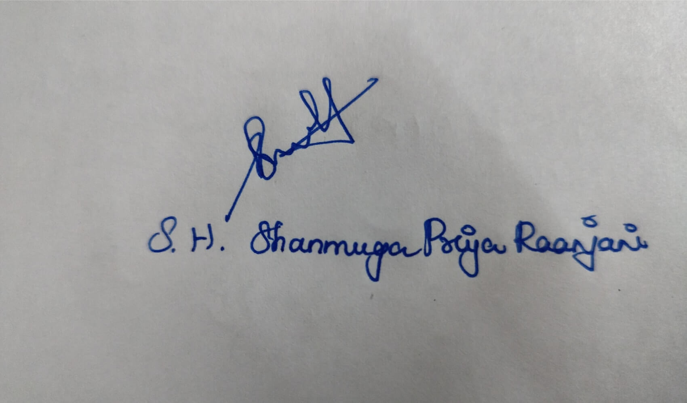

RESUME
.jpg)
SHANMUGA PRIYA RAANJANI S H
SOFTWARE DEVELOPER
+91 7904551727
220701262@rajalakshmi.edu.in
linkedin.com/in/shanmuga-priya-raanjani
PROFILE
With a keen eye for emerging trends and technologies, I thrive in collaborative environments, driving teamwork towards impactful achievements. Constantly learning and adapting to industry advancements, I am poised to tackle challenges with a forward-thinking mindset. My strong problem-solving skills and drive for continuous improvement equip me to make meaningful contributions to the dynamic field of technology.
My unwavering commitment to learning and adaptability makes me an exceptional candidate, ready to excel in any role. With a proactive approach, I guarantee impactful results, reflecting my readiness to tackle challenges and achieve success.
Proficient in mobile development, system design, and web development, with expertise in frameworks like Flutter and Streamlit, I am skilled in designing and implementing complex applications. Eager to contribute to innovative projects and drive technological advancements, I leverage my skills to create impactful solutions.
EDUCATION
| INSTITUTION | PLACE | QUALIFICATION | PERCENTAGE |
|---|---|---|---|
| Rajalakshmi Engineering College | Chennai, India | Bachelor of Engineering in Computer Science | CGPA: 8.74/10.00 |
| Venus Higher Secondary School | Chidambaram, India | Higher Secondary School Certificate (HSC) | Percentage: 96.3% |
TECHNICAL SKILLS
- C
- C++
- java
- python
- flutter
- html
- css
- javascript
OTHER SKILLS
- Problem solving
- Creativity
- Expanded vision
- Resilience
- emotional intelligence
- Analytical skills
HACKATHONS AND EVENTS
- Smart India Hackathon (SIH) 2023
Role: Participant
Project: Developed solutions for more than 5 problem statements and cleared two levels. - HP Global Hackathon 2024
Role: Participant
Project: Developed a solution to integrate AI in educational sector . - TANCAM 2024
Role: Team Lead
Project: Developed a solution for helping MSME using an application software - HackFest 2024
Role: Team Leader
Project: Led a team to develop a software which helps to connect the solar power plant installation agents and common people - NIRAL THIRUVIZHA 2024
Role: Team Lead
Project: Developed a AI infused chatbot which will interact with people to improve their mental health.
PROJECTS COMPLETED
Developed a comprehensive Hospital Management System to streamline hospital operations, improve patient care, and enhance administrative efficiency. This system was designed to manage patient records, appointments, staff information, and billing processes. Programming Language: Python , Front-End Framework: Streamlit , Database: Mysql , Libraries: Pandas, NumPy, Streamlit
